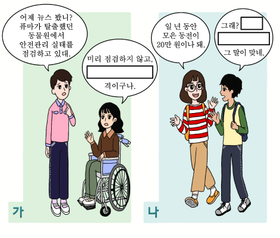

1번
(가)와 (나)의 상황에 적절한 속담이 알맞게 나열된 것을 고르세요.

개요
가
나
소 잃고 외양간 고친다
티끌 모아 태산
소 잃고 외양간 고친다
배보다 배꼽이 더 크다
세 살 적 버릇이 여든까지 간다
우물을 파도 한 우물을 파라
세 살 적 버릇이 여든까지 간다
돌다리도 두들겨 보고 건너라
하룻강아지 범 무서운 줄 모른다
우물을 파도 한 우물을 파라